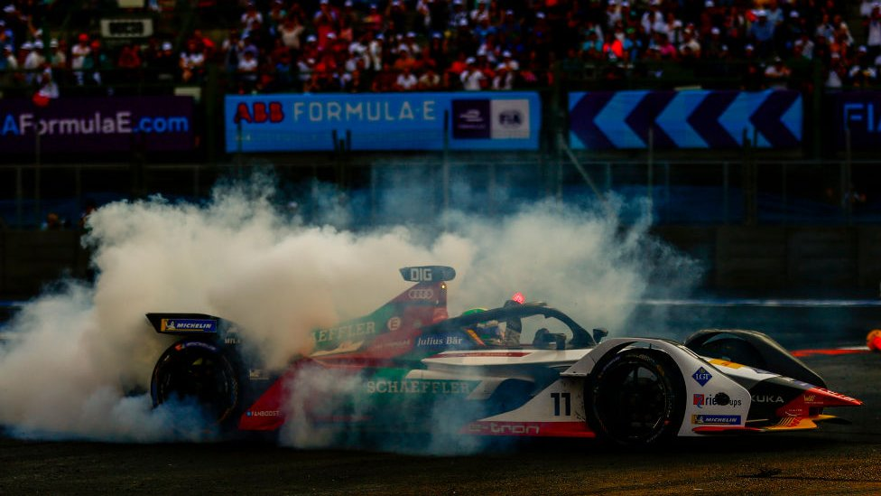

La última curva"
La carrera más loca de la historia
El sol caía a plomo sobre el Autódromo Hermanos Rodríguez. Era febrero, y la altitud de la Ciudad de México le daba un toque eléctrico al aire. Las gradas vibraban con gritos, colores y entusiasmo, mientras el rugido agudo de los monoplazas eléctricos llenaba el ambiente. Era la Fórmula E, y nadie sabía que estaban a punto de vivir una de las carreras más locas en la historia del automovilismo moderno.
Desde el principio, Pascal Wehrlein estaba imparable. Al volante de su Mahindra, parecía flotar sobre el asfalto. Curva tras curva, vuelta tras vuelta, mantenía a raya a sus perseguidores con una mezcla de sangre fría y velocidad quirúrgica. Era su primer año en la categoría, y estaba a punto de lograr lo impensado: una victoria dominante en un circuito brutalmente técnico.
Detrás, Lucas di Grassi, el veterano brasileño, empujaba como un lobo hambriento. Su Audi era veloz, pero no lo suficiente. Wehrlein resistía, se defendía, gestionaba la energía con maestría. La diferencia entre ambos era mínima, pero constante.
Faltando pocas vueltas, el drama comenzó a hervir. Di Grassi atacaba con todo. Wehrlein resistía. Ninguno cometía errores. El público rugía como una sola bestia.
Y entonces llegó la última vuelta.
La batería de Wehrlein, que había sido cuidadosamente administrada durante toda la carrera, empezó a caer peligrosamente. El coche daba señales de que no iba a aguantar. Cada curva era un suspiro. Cada aceleración, un riesgo. Y aún así, seguía en la punta. Di Grassi se acercaba como una sombra. La carrera se estaba decidiendo al límite del cálculo, no de la velocidad.
En la última curva —la última curva— Wehrlein cerró la puerta. No había forma de pasar. Pero justo allí, el coche dijo basta.
En una imagen de locura, su Mahindra se arrastraba hacia la línea de meta… sin potencia. Como una pesadilla, la batería se agotó a pocos metros del final. Y por el espejo retrovisor, apareció la silueta del Audi de Di Grassi. Como un fantasma.
El brasileño lo rebasó a centímetros del final, en un momento que dejó sin aliento al mundo entero.
La bandera a cuadros cayó, y Lucas di Grassi ganó la carrera más increíble que haya vivido la Fórmula E. Wehrlein, desolado, cruzó la meta lentamente… solo para descubrir que además había sido penalizado por cortar una chicana en los últimos metros. Del primero al sexto.
Una vez más, el circuito mexicano entregaba una historia de gloria y tragedia. En una categoría donde la energía es el alma de la batalla, aquel día el ganador fue quien tuvo el coraje de esperar, y la batería de resistir.